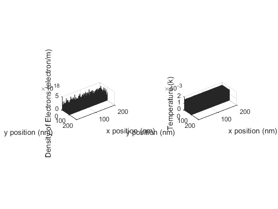

Contents
%%*Assugnment 1: Modeling of Electron Transport* % % Elec 4700 % Steven Cramp % 101030294
Introduction
The purpose of this code is to ilistate how Monte carlo simulations can be used to model the movement of electorns through an N type silicon semiconductor. This report will analyses the mean thermal volocity, mean free path, time vetween colisions , temperature and density of electrons.
Part 1
This section look at the analysis of a system where electrons do not colide within the semiconductor and experience simple boundry conditions. The boundry conditions that were used caused the electons to bounce off of the top and bottom of the semiconductor and allowed for periodic travel of electrons from one side of the semiconductor to the other. In orhter words when an electron traveled past the side of the semiconductor it was teleported to the otherside with the same volocity.
% The simulation works by first setting up the fallowing veryables that % dictate how the simulation wil be performed clc;clear;close all global C C.q_0 = 1.60217653e-19; % electron charge C.hb = 1.054571596e-34; % Dirac constant C.h = C.hb * 2 * pi; % Planck constant C.m_0 = 9.10938215e-31; % electron mass C.kb = 1.3806504e-23; % Boltzmann constant C.eps_0 = 8.854187817e-12; % vacuum permittivity C.mu_0 = 1.2566370614e-6; % vacuum permeability C.c = 299792458; % speed of light C.g = 9.80665; %metres (32.1740 ft) per s² partical_colission = 0;% part 2 boxes =0;%part 3 specular = 1 ;% part 3 one is on zero is off T= 300;%k temperature Eme= 0.26* C.m_0;% kg effective mass of electron Tmn = 0.2e-12%s mean time between colissions vth = sqrt(2*C.kb*T/Eme)% m/s thermal volocity MFP = vth*Tmn %m m= 100;% length of sim dt = 7e-15;% time step N = 10000; %number of electons dimx =200e-9;%m dimy =100e-9;%m % create boxes if (boxes) box1 = [dimx-125e-9,dimx-75e-9,dimx-75e-9,dimx-125e-9,dimx-125e-9;dimy,dimy, dimy-40e-9,dimy-40e-9,dimy]; box2 = [dimx-125e-9,dimx-75e-9,dimx-75e-9,dimx-125e-9,dimx-125e-9;40e-9,40e-9, 0,0,40e-9]; else box1 =[0 0 0 0 0 ; 0 0 0 0 0]; box2 =[0 0 0 0 0 ; 0 0 0 0 0]; end % initiates points and ensures that they donot spawn ouside the boundries if ~boxes xpos = (randi((dimx*1e9)+1,1,N)-1)/1e9;% m electron position x ypos = (randi((dimy*1e9)+1,1,N)-1)/1e9;% m electron position y elseif(boxes) for l =1:N xpos(1,l) =(randi((dimx*1e9)+1,1,1)-1)/1e9 ; ypos(1,l) =(randi((dimy*1e9)+1,1,1)-1)/1e9; while (ypos(1,l)<=0|ypos(1,l)>=dimy|xpos(1,l)>=box1(1,1)&xpos(1,l)<=box1(1,2)&(ypos(1,l)<=box2(2,1)|ypos(1,l)>=box1(2,3))) xpos(1,l) =(randi((dimx*1e9)+1,1,1)-1)/1e9 ; ypos(1,l) =(randi((dimy*1e9)+1,1,1)-1)/1e9; end end end % while(sum ((xpos>=box1(1,1)&xpos<= box1(1,1)& ypos>= box1(2,3))|(xpos>=box2(1,1)&xpos<= box2(1,1)& ypos>= box2(2,3)))>=1) % xpos = (randi((dimx*1e9)+1,1,N)-1)/1e9;% m electron position x % ypos = (randi((dimy*1e9)+1,1,N)-1)/1e9;% m electron position y % end vx = zeros(1,N);%m/s velocity in x vy = zeros(1,N);%m/s velocity in y colision_count = zeros(1,N); dtraveled=zeros(1,N); colour = [[1 0 0];[0 1 0];[0 0 1];[0 1 1];[1 0 1];[1 1 0];[0 0 0];[0 0.447 0.741];[0.85 0.325 0.098];[0.929 0.694 0.125];[0.466 0.674 0.188]]; Temp = T; % initiated the partical velocities if ~partical_colission angle = rand(1,N); vx = vth* cos(angle*2*pi); vy = vth* sin(angle*2*pi); else vx =randn(1,N)*sqrt(C.kb*T/Eme); vy=randn(1,N)*sqrt(C.kb*T/Eme); end v = sqrt(vx.^2+vy.^2); if boxes figure (2) subplot(2,1,1); plot (box1(1,:),box1(2,:),'-k') hold on plot (box2(1,:),box2(2,:),'-k') end if partical_colission figure histogram(v) p =1-exp(-dt/Tmn) else p=0 end for l=1:m %updates position xpos=[xpos;xpos(l,:)+vx*dt]; ypos=[ypos;ypos(l,:)+vy*dt]; % fineds the distance traveled by each partical dtraveled = dtraveled + sqrt ((xpos(l,:)-xpos(l+1,:)).^2+(ypos(l,:)-ypos(l+1,:)).^2); slope =(vy./vx); % sets up colision detection by determining if the particals have the % distance to the edges dtt = sqrt(((dimy -ypos(l+1,:)).^2)+((((dimy-ypos(l+1,:))./slope)).^2)); dtb = sqrt(((0 -ypos(l+1,:)).^2)+((((-ypos(l+1,:))./slope)).^2)); if(boxes) dttbf =((xpos(l+1,:)>=box1(1,1)&xpos(l+1,:)<=box1(1,2))).* sqrt(((box1(2,3) -ypos(l+1,:)).^2)+((((box1(2,3)-ypos(l+1,:))./slope)).^2))+~((xpos(l+1,:)>=box1(1,1)&xpos(l+1,:)<=box1(1,2))).*100; dtbbf = ((xpos(l+1,:)>=box1(1,1)&xpos(l+1,:)<=box1(1,2))).*sqrt(((box2(2,1) -ypos(l+1,:)).^2)+((((box2(2,1)-ypos(l+1,:))./slope)).^2))+~((xpos(l+1,:)>=box1(1,1)&xpos(l+1,:)<=box1(1,2))).*100; dts1 =( ypos(l+1,:)<=box2(2,1)|ypos(l+1,:)>=box1(2,3)).* sqrt((slope.*(box1(1,1)-xpos(l+1,:))).^2+(box1(1,1)-xpos(l+1,:)).^2) +~( ypos(l+1,:)<=box2(2,1)|ypos(l+1,:)>=box1(2,3)).*100; dts2=( ypos(l+1,:)<=box2(2,1)|ypos(l+1,:)>=box1(2,3)).* sqrt((slope.*(box1(1,2)-xpos(l+1,:))).^2+(box1(1,2)-xpos(l+1,:)).^2) +~( ypos(l+1,:)<=box2(2,1)|ypos(l+1,:)>=box1(2,3)).*100; else dttbf =100; dtbbf = 100; dts1 =100; dts2=100; end %counts the number of colissions that have occured and c=(((dts1<1.5e-9|dts2<1.5e-9)|((dtt<1.5e-9|dtb<1.5e-9|dttbf<1.5e-9|dtbbf<1.5e-9)))); colision_count = colision_count+(((dts1<1.5e-9|dts2<1.5e-9)|((dtt<1.5e-9|dtb<1.5e-9|dttbf<1.5e-9|dtbbf<1.5e-9)))); if specular % basic colission part one vy= -((dtt<1.5e-9|dtb<1.5e-9|dttbf<1.5e-9|dtbbf<1.5e-9).*2-1).*vy; vx= -((dts1<1.5e-9|dts2<1.5e-9).*2-1).*vx; else % re thermalized velocities for part 3 %if rethermalized volocity is in the same direection as previouse %than flip signs signx=sign(vx); signy=sign(vy); vx= (((dts1<1.5e-9|dts2<1.5e-9)|((dtt<1.5e-9|dtb<1.5e-9|dttbf<1.5e-9|dtbbf<1.5e-9)))).*(randn(1,N)*sqrt(C.kb*T/Eme)) +(~(((dts1<1.5e-9|dts2<1.5e-9))|((dtt<1.5e-9|dtb<1.5e-9|dttbf<1.5e-9|dtbbf<1.5e-9)))).*vx; vy= (((dts1<1.5e-9|dts2<1.5e-9)|((dtt<1.5e-9|dtb<1.5e-9|dttbf<1.5e-9|dtbbf<1.5e-9)))).*(randn(1,N)*sqrt(C.kb*T/Eme)) +(~(((dts1<1.5e-9|dts2<1.5e-9))|((dtt<1.5e-9|dtb<1.5e-9|dttbf<1.5e-9|dtbbf<1.5e-9)))).*vy; vx = ((dts1<1.5e-9|dts2<1.5e-9)&signx==sign(vx)).*-1.*vx+(~(((dts1<1.5e-9|dts2<1.5e-9)&signx==sign(vx)))).*vx; vy = (((dtt<1.5e-9|dtb<1.5e-9|dttbf<1.5e-9|dtbbf<1.5e-9))&signy==sign(vy)).*-1.*vy+(~((((dtt<1.5e-9|dtb<1.5e-9|dttbf<1.5e-9|dtbbf<1.5e-9))&signy==sign(vy)))).*vy; end % loop condition for end boundries xpos(l+1,:) = (xpos(l+1,:)>dimx).*0+(xpos(l+1,:)<0).*dimx+~(xpos(l+1,:)>=dimx|xpos(l+1,:)<=0).*xpos(l+1,:); % colisions with other particals are only alouwed when partical is away % from the edges and has not colided with an edge Part 2 and 3 colision = p>rand(1,N)&~(((dts1<10e-9|dts2<10e-9)|((dtt<10e-9|dtb<10e-9|dttbf<10e-9|dtbbf<10e-9))))&~c; colision_count = colision_count+colision; vy=colision.*(randn(1,N)*sqrt(C.kb*T/Eme))+(~colision).*vy; vx=colision.*(randn(1,N)*sqrt(C.kb*T/Eme))+(~colision).*vx; % skips the plot of the x boundry transition skip = (xpos(l+1,:)>=dimx|xpos(l+1,:)<=0); % progress = (l/m)*100 v = sqrt(vx.^2+vy.^2); c=0; %finds the current temperature Temp =[Temp, ((mean((vy).^2)+mean((vx).^2))*Eme/(2*C.kb))]; % plots the electrons figure (2) for k =1:10 if skip(k)==0 subplot(2,1,1); plot([xpos(l,k),xpos(l+1,k)],[ypos(l,k),ypos(l+1,k)],'-','color',colour(k,:)) end xlim([0,dimx]) ylim([0,dimy]) hold on %quiver(xpos(:,k),ypos(:,k),vx+xpos(:,k),vy+ypos(:,k),0.0001) drawnow limitrate end subplot(2,1,2) plot([dt*(l-1),dt*(l)],Temp(l:l+1),'b-') hold on xlabel('time (s)') ylabel('temperature (k)') xlim([0,m*dt]) ylim([0,T+100]) end %finds the mean free path and mean time between colission for part 2 and %plots a final velocity hystegram if (partical_colission) colision_count(colision_count<=0) = 1 MFP2 = mean (dtraveled./(colision_count)) Tmn2= mean( m*dt./(colision_count)) figure(3) histogram(v) xlabel('volocity (m/s)') ylabel('probablility') end %findes the dencity and temperature of the electrons part 3 squarcount= zeros(round(dimy/1e-9),round(dimx/1e-9)); temps= zeros(round(dimy/1e-9),round(dimx/1e-9)); for k =1:N yindex = min((round(dimy/1e-9))-ceil(ypos(m+1,k)/1e-9)+1,round(dimy/1e-9)); xindex = min(ceil(xpos(m+1,k)/1e-9)+1,round(dimx/1e-9)); % excludes particals that violate boundry conditions. if ((yindex>0&xindex>0) & ~((((ypos(m+1,k)>=box1(2,3))|(ypos(m+1,k)<=box2(2,1))))&(xpos(m+1,k)>= box1(1,1)&xpos(m+1,k)<=box1(1,2)))) squarcount(yindex,xindex) =squarcount(yindex,xindex) +1; temps(yindex,xindex)=v(k)*Eme/(2*C.kb)+temps(yindex,xindex); end end temps=temps./squarcount; squarcount =squarcount./((1e-9)*(1e-9)); figure subplot(1,2,1) bar3(squarcount) xlabel('x position (nm)') ylabel('y position (nm)') zlabel('Density of Electrons (electron/m)') subplot(1,2,2) bar3(temps) xlabel('x position (nm)') ylabel('y position (nm)') zlabel('Temperature (k)')
Tmn =
2.0000e-13
vth =
1.8702e+05
MFP =
3.7404e-08
p =
0
